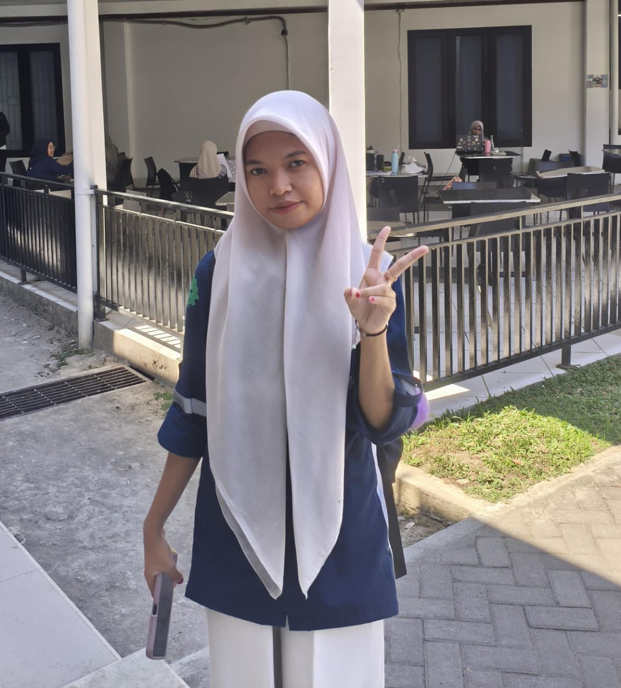

ABOUT ME
Tentang Saya

Nama saya Fitriani, Saya merupakan salah satu mahasiswa Teknik Komputer di Universitas Negeri Makassar. Awalnya saya tidak terlalu tertarik dengan dunia Komputer, apalagi yang namanya "Ngoding". Akan tetapi, seiring berjalannya waktu, saya mulai terbiasa dan tertarik untuk mempelajari dan memahaminya lebih dalam lagi.
Sedang Dipelajari
Beberapa bahasa pemrograman seperti HTML, CSS, Java, PHP, dan Python. Saya juga belajar tentang cara membuat website sederhana.
Tujuan Portfolio
Portfolio ini saya buat sebagai sarana untuk memperkenalkan diri, mendokumentasikan proses belajar saya di bidang Teknik Komputer, serta menampilkan kemampuan dan proyek-proyek sederhana yang sedang saya kembangkan.